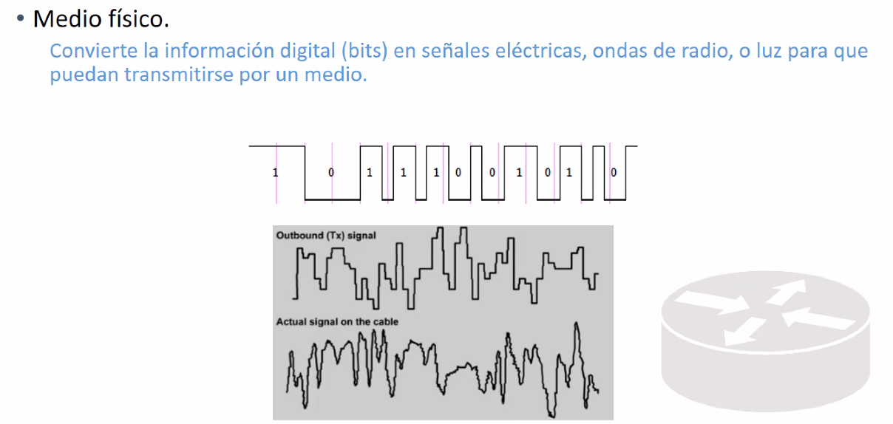

Señalizacion de la señal
Niveles de voltaje
Es el internet a muy bajo nivel.
La capa fisica es el medio para propagar la informacion. Comprende todas las señales y los medios de transmicion.
Equipos de capa 1.
Basicamente tabajan con señales